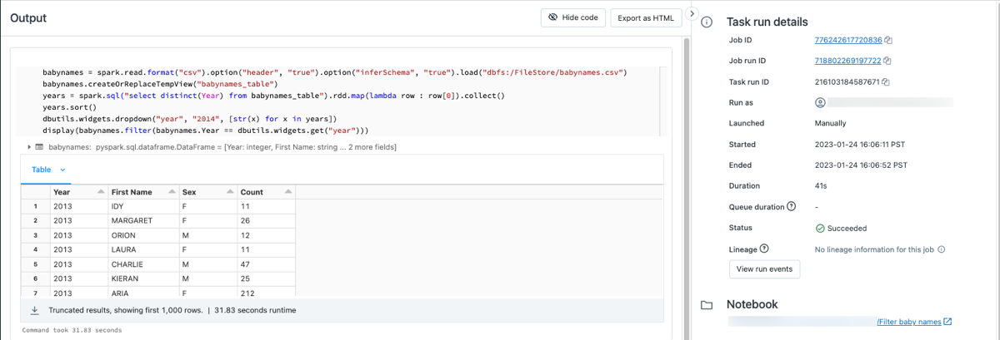

Create your first workflow with a Databricks job
This article demonstrates a Databricks job that orchestrates tasks to read and process a sample dataset. In this quickstart, you:
Create a new notebook and add code to retrieve a sample dataset containing popular baby names by year.
Save the sample dataset to DBFS.
Create a new notebook and add code to read the dataset from DBFS, filter it by year, and display the results.
Create a new job and configure two tasks using the notebooks.
Run the job and view the results.
Requirements
You must have cluster creation permission to create a job cluster or permissions to an all-purpose cluster.
Create the notebooks
Retrieve and save data
To create a notebook to retrieve the sample dataset and save it to DBFS:
Go to your Databricks landing page and click
 New in the sidebar and select Notebook. Databricks creates and opens a new, blank notebook in your default folder. The default language is the language you most recently used, and the notebook is automatically attached to the compute resource that you most recently used.
New in the sidebar and select Notebook. Databricks creates and opens a new, blank notebook in your default folder. The default language is the language you most recently used, and the notebook is automatically attached to the compute resource that you most recently used.If necessary, change the default language to Python.
Copy the following Python code and paste it into the first cell of the notebook.
import requests response = requests.get('http://health.data.ny.gov/api/views/myeu-hzra/rows.csv') csvfile = response.content.decode('utf-8') dbutils.fs.put("dbfs:/FileStore/babynames.csv", csvfile, True)
Read and display filtered data
To create a notebook to read and present the data for filtering:
Go to your Databricks landing page and click
New in the sidebar and select Notebook. Databricks creates and opens a new, blank notebook in your default folder. The default language is the language you most recently used, and the notebook is automatically attached to the compute resource that you most recently used.If necessary, change the default language to Python.
Copy the following Python code and paste it into the first cell of the notebook.
babynames = spark.read.format("csv").option("header", "true").option("inferSchema", "true").load("dbfs:/FileStore/babynames.csv") babynames.createOrReplaceTempView("babynames_table") years = spark.sql("select distinct(Year) from babynames_table").rdd.map(lambda row : row[0]).collect() years.sort() dbutils.widgets.dropdown("year", "2014", [str(x) for x in years]) display(babynames.filter(babynames.Year == dbutils.widgets.get("year")))
Create a job
Click
 Workflows in the sidebar.
Workflows in the sidebar.Click
 .
.The Tasks tab displays with the create task dialog.

Replace Add a name for your job… with your job name.
In the Task name field, enter a name for the task; for example, retrieve-baby-names.
In the Type drop-down menu, select Notebook.
Use the file browser to find the first notebook you created, click the notebook name, and click Confirm.
Click Create task.
Click
 below the task you just created to add another task.
below the task you just created to add another task.In the Task name field, enter a name for the task; for example, filter-baby-names.
In the Type drop-down menu, select Notebook.
Use the file browser to find the second notebook you created, click the notebook name, and click Confirm.
Click Add under Parameters. In the Key field, enter
year. In the Value field, enter2014.Click Create task.
Run the job
To run the job immediately, click  in the upper right corner. You can also run the job by clicking the Runs tab and clicking Run Now in the Active Runs table.
in the upper right corner. You can also run the job by clicking the Runs tab and clicking Run Now in the Active Runs table.
View run details
Click the Runs tab and click the link for the run in the Active Runs table or in the Completed Runs (past 60 days) table.
Click either task to see the output and details. For example, click the filter-baby-names task to view the output and run details for the filter task:

Run with different parameters
To re-run the job and filter baby names for a different year:
Click
 next to Run Now and select Run Now with Different Parameters or click Run Now with Different Parameters in the Active Runs table.
next to Run Now and select Run Now with Different Parameters or click Run Now with Different Parameters in the Active Runs table.In the Value field, enter
2015.Click Run.